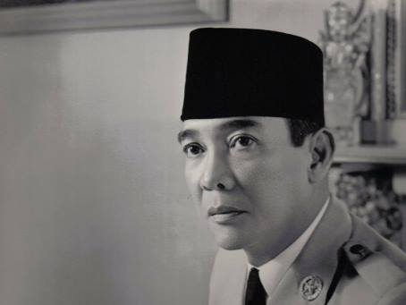
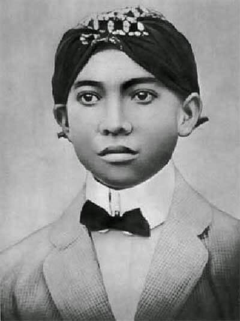
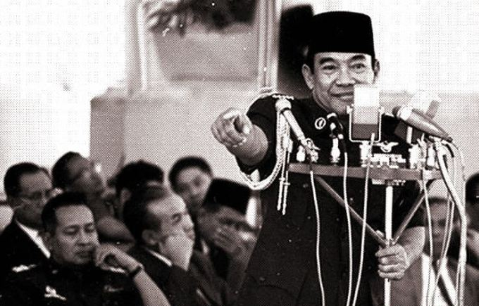
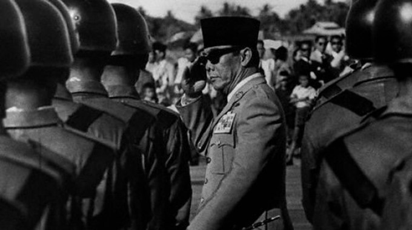
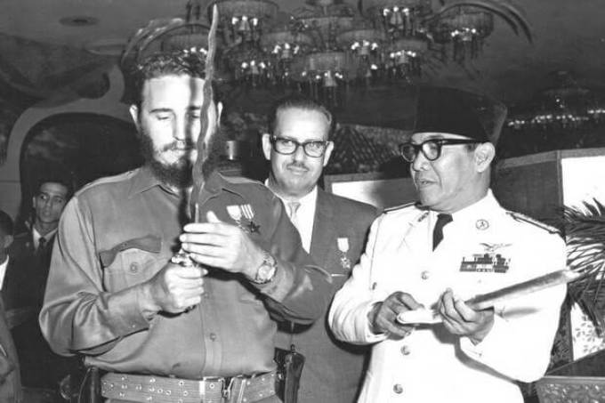
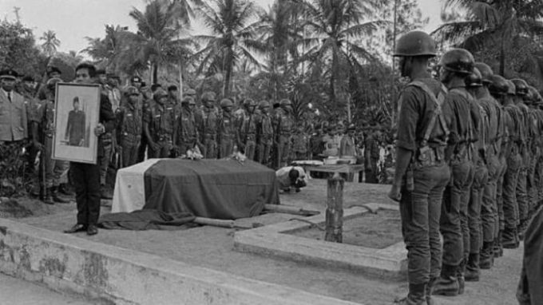

Biodata
- Nama Lengkap : Dr. Ir. H. Soekarno
- Nama Kecil : Koesno Sosrodihardjo
- Nama Panggilan : Bung Karno, Soekarno, Pak Karno
- Lahir : Surabaya, 6 Juni 1901
- Wafat : Jakarta, 21 Juni 1970
Sejarah
Biografi Singkat
Ir Soekarno dikenal sebagai Presiden pertama Republik Indonesia dan juga sebagai Pahlawan Proklamasi, Soekarnoyang biasa dipanggil Bung Karno, lahir di Blitar, Jawa Timur, 6 Juni 1901 dan wafat pada tanggal 21 Juni 1970 di Jakarta. Saat ia lahir dinamakan Koesno Sosrodihardjo. Ayahnya bernama Raden Soekemi Sosrodihardjo dan ibunya Ida Ayu Nyoman Rai. Semasa hidupnya, beliau mempunyai tiga istri dan dikaruniai delapan anak. Dari istri Fatmawati mempunyai anak Guntur, Megawati, Rachmawati, Sukmawati dan Guruh. Dari istri Hartini mempunyai Taufan dan Bayu, sedangkan dari istri Ratna Sari Dewi, wanita turunan Jepang bernama asli Naoko Nemoto mempunyai anak Kartika.

Masa Kecil Ir Soekarno
Masa kecil Soekarno hanya beberapa tahun hidup bersama orangtuanya di Blitar. Ia juga sempat tinggal beberapa saat dengan kakeknya, Raden hardjokromo di Tulungagung sebelum pindah bersama orangtunya lagi di Mojokerto.
Di Mojokerto, ayahnya menyekolahkan Soekarno kecil di Eerste Inlande School. Namun, pada tahun 1911 Soekarno dipindahkan ke Europeeshe Lagere School (ELS) untuk mempermudah ia diterima di Hoogere Burger School (HBS), Surabaya.

Setelah lulus dari ELS pada tahun 1915, Soekarno muda melanjutkan pendidikannya di HBS, Surabaya. Disinilah ia mulai berinteraksi dengan Haji Oemar Said Tjokroaminoto, politisi kawakan pendiri Syarikat Islam.
Ketika belajar di HBS, Ir Soekarno menggembleng jiwa nasionalismenya. Ia aktif di organisasi pemuda tri Koro Darmo yang merupakan bentukan daripada organisasi Budi Utomo yang fenomenal. Dan seiring berjalannya waktu Ir Soekarno mengubah nama organisasi ini menjadi Jong Java (Pemuda Jawa) pada tahun 1918.
Kiprah Ir Soekarno untuk Bangsa

Setelah lulus dari HBS tahun 1920, ia pindah ke Bandung untuk melanjutkan belajarnya di Technische Hoogeschool atau THS (yang sekarang menjadi ITB). Soekarno berhasil meraih gelar “Ir” pada 25 Mei 1926.
Kemudian, ia mulai merumuskan ajaran Marhaenisme dan mendirikan PNI (Partai Nasional lndonesia) pada 4 Juli 1927, dengan tujuan Indonesia Merdeka. Akibat dari pendirian itu, Belanda memasukkannya ke penjara Sukamiskin, Bandung pada 29 Desember 1929. Dari dalam penjara inilah, Ir Soekarno membuat pledoi yang tersohor, Indonesia Menggugat. Ia memaparkan kebejatan Belanda, bangsa yang mengaku lebih maju itu.
Pembelaannya itu membuat Belanda semakin marah. Sehingga pada bulan Juli 1930, PNI pun dibubarkan. Setelah bebas pada tahun 1931, Soekarno bergabung dengan Partindo (Partai Indonesia) dan sekaligus menjadi pemimpinnya.
Akibatnya, ia kembali ditangkap oleh Belanda dan dibuang ke Ende, Flores pada tahun 1933. Empat tahun kemudian diasingkn ke Bengkulu. Ir Soekarno baru benar-benar bebas setelah masa kependudukan Jepang pada tahun 1942.
Di awal kependudukannya, Jepang tidak terlalu memberi perhatian pada tokoh-tokoh pergerakan Indonesia. Sampai akhirnya sekitar tahun 1943 Jepang baru menyadari betapa pentingnya para tokoh ini. Jepang mulai memanfaatkannya dan salah satu tokoh yang bisa menarik perhatian penduduk Indonesia terhadap propaganda Jepang ialah Ir Soekarno.
Akhirnya tokoh-tokoh nasional ini mulai bekerjasama dengan pemerintah Jepang untuk dapat mencapai kemerdekaan Indonesia, walapun adapula yang tetap melakukan gerakan perlawanan seperti Sutan Sjahrir dan Amir Sjarifuddin karena menganggap Jepang merupakan fasis yang berbahaya.

Ir Soekarno sendiri mulai aktif mempersiapkan kemerdekaan Indonesia, diantaranya adalah merumuskan Pancasila, UUD 1945 dan dasar-dasar pemerintahan Indonesia termasuk merumuskan naskah proklamasi Kemerdekaan.
Setelah melewati perjuangan yang cukup panjang pada tanggal 17 Agustus 1945, Ir Soekarno dan Drs. Mohammad Hatta memproklamasikan kemerdekaan Indonesia.
Dalam sidang PPKI tanggal 18 Agustus 1945, Ir Soekarno dipilih secara aklamasi sebagai Presiden Republik Indonesia yang pertama.
Kemerdekaan yang telah dicapai ini tidak langsung bisa dinikmati, sebab di tahun-tahun berikutnya masih ada tindakan sekutu yang secara terang-terangan tidak mengakui kemerdekaan Indonesia dan bahkan berusaha untuk kembali merebut kekuasaan di Indonesia.

Ir Soekarno ialah sosok pemimpin yang fenomenal, ia bisa menghimpun bangsa-bangsa di Asia, Afrika, dan Amerika Latin dengan Konferensi Asia Afrika di Bandung pada tahun 1955 yang kemudian berkembang menjadi Gerakan Non Blok.
Pemberontakan G-30-S/PKI pada tahun 1965 melahirkan krisis politik hebat yang menyebabkan penolakan MPR atas pertanggungjawabannya. Sebaliknya MPR mengangkat Soeharto sebagai Presiden.
Akhir hayat Presiden Soekarno

Pada hari Minggu, 21 Juni 1970 Ir Soekarno meninggal dunia di RSPAD (Rumah Sakit Pusat Angkatan Darat) Gatot Subroto, Jakarta. Ia di semayamkan di Wisma Yaso, Jakarta dan kemudian dikebumikan di Blitar, Jawa Timur di dekat makam ibundanya, Ida Ayu Nyoman Rai
Ir Soekarno ialah sosok pahlawan yang sejati. Ia tidak hanya diakui berjasa bagi bangsanya sendiri, namun juga memberikan pengabdiannya untuk kedamaian di dunia.
Semua sepakat bahwa Ir Soekarno merupakan seorang “manusia tidak biasa” yang belum tentu dilahirkan kembali dalam kurun waktu satu abad. Ir Soekarno adalah bapak bangsa yang tidak akan dilupakan jasanya dan pemerintah memberi anugerah kepadanya sebagai “Pahlawan Proklamasi”.
Penghargaan
- Gelar Doktor Honoris Causa dari 26 universitas dari dalam dan luar negeri, seperti Universitas Indonesia, Institut Teknologi Bandung, Universitas Gadjah Mada, Colombia University (Amerika Serikat), Lomonosov University (Rusia), Berlin University (Jerman) dan lain-lain.
- Penghargaan bintang kelas satu dari The Order of the Supreme Companions of OR Tambo, Afrika Selatan (2005)
- Bintang Mahaputera Adipurna (1959)
- Lenin Peace Prize (1960)
- Philippine Legion of Honor (Chief Commander, 3 Februari 1951)
Biografi Presiden Indonesia